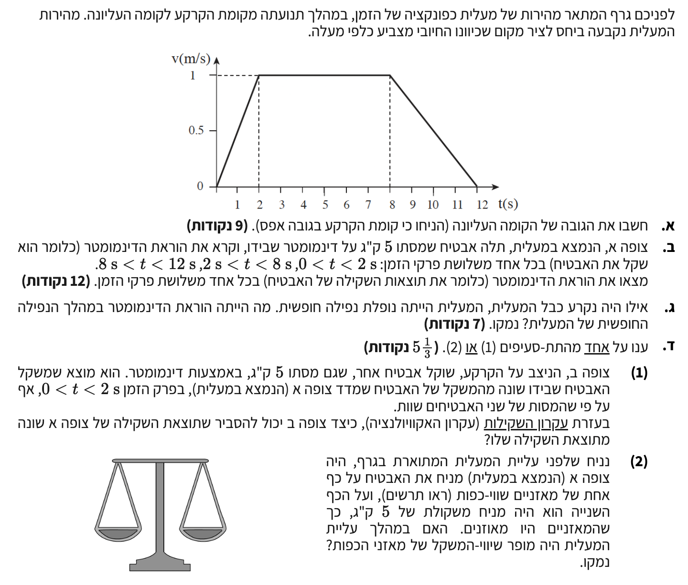

פתרון בגרות במכניקה
2008 שאלה 2
קינמטיקה ודינמיקה של מעלית: פתרון מודרך, צעד-אחר-צעד
מבט כללי על השאלה
שלום תלמידים יקרים! כאן המורה שלכם. היום נפתור יחד שאלת בגרות העוסקת בקינמטיקה ודינמיקה של מעלית.
נלמד איך לנתח תנועה מתוך גרף מהירות-זמן, ונבין לעומק כיצד משתנה קריאת דינמומטר (תחושת הכובד שלנו) כאשר מערכת מאיצה.
קחו נשימה עמוקה, נפרק את השאלה שלב אחרי שלב וברוגע. אנחנו יוצאים לדרך!

סעיף א': חישוב גובה הקומה העליונה
הקשר בין העתק לגרף מהירות-זמן מוגדר באמצעות עקרון קינמטי בסיסי (אינטגרל של המהירות בזמן):
\( \Delta x = \text{ןמזה ריצל תוריהמה פרג ןיב אולכה חטש} \)במקרה שלנו, הצורה הגאומטרית הכלואה היא טרפז, אך ניתן לחשב את השטח גם כסכום שטחים של שני משולשים ומלבן.
פתרון צעד-אחר-צעד:
נחשב את שטח הטרפז מהגרף. הבסיס התחתון נמשך מתחילת התנועה עד סופה: \( b_1 = 12\text{ s} - 0\text{ s} = 12\text{ s} \). הבסיס העליון מתאים לפרק הזמן שבו המהירות קבועה (מ- \( 2\text{ s} \) עד \( 8\text{ s} \)): \( b_2 = 8\text{ s} - 2\text{ s} = 6\text{ s} \). גובה הטרפז הוא המהירות המקסימלית: \( h = 1\text{ m/s} \).
מסקנה: ההעתק הכולל הוא \( \Delta x = 9\text{ m} \).
סעיף ב': הוראת הדינמומטר בכל פרק זמן
\( \bar{a} = \frac{\Delta v}{\Delta t} \) \( F_g = mg \) \( \Sigma F = ma \)
תרשים כוחות (FBD) על האבטיח:
![]()
על פי החוק השני של ניוטון, משוואת הכוחות בציר ה-y היא:
כעת נחשב את התאוצה \( a \) מתוך שיפוע הגרף בכל פרק זמן, ונציב למציאת \( F \).
חישוב:
בפרק זמן זה גודל המהירות גדל. נחשב את התאוצה מהשיפוע:
נציב במשוואת הכוחות:
בפרק זמן זה המהירות קבועה (\( 1\text{ m/s} \)), כלומר לא חל שינוי במהירות ולכן התאוצה היא אפס (שיפוע אפס):
נציב במשוואת הכוחות:
בפרק זמן זה גודל המהירות קטן, מה שאומר שהתאוצה מכוונת נגד כיוון המהירות (כלומר כלפי מטה). נחשב מהשיפוע:
נציב במשוואת הכוחות (ונעגל ל-3 ספרות מהותיות):
הוראות הדינמומטר בכל פרק זמן:
\( F_{(0-2\text{s})} = 52.5\text{ N} \)
\( F_{(2-8\text{s})} = 50\text{ N} \)
\( F_{(8-12\text{s})} = 48.8\text{ N} \)
סעיף ג': נפילה חופשית
\( a = -g = -10\text{ m/s}^2 \) \( \Sigma F_y = ma \Rightarrow F - mg = ma \)
הצבה ופתרון:
בנפילה חופשית, על הגוף פועל כוח הכובד בלבד. במצב כזה, תאוצת כל הגופים, ללא קשר למסתם, שווה לתאוצת הכובד \( g \) וכיוונה כלפי מטה. מכיוון שהגדרנו את ציר ה-\( y \) כחיובי כלפי מעלה, תאוצת האבטיח תהיה \( a = -10\text{ m/s}^2 \).
נציב תאוצה זו למשוואת הכוחות שמצאנו בסעיף ב':
נימוק פיזיקלי: במצב של נפילה חופשית, כל רכיבי המערכת – המעלית, האבטיח והדינמומטר (הקפיץ) – נופלים כולם כלפי מטה באותה תאוצה (\( g \)). לכן, אין תנועה יחסית ביניהם ולא נדרש כוח מגע (כמו מתיחות הקפיץ) כדי שגוף אחד ימשוך את השני. כתוצאה מכך, הקפיץ רפוי, והוראת הדינמומטר תהיה אפס.
מסקנה: הוראת הדינמומטר תהיה \( F = 0\text{ N} \).
סעיף ד' (1): עקרון השקילות - דינמומטר
\( g_{\text{eff}} = g - a \)
עקרון השקילות קובע כי מבחינה פיזיקלית מקומית, אין הבדל בין שהייה במערכת מאיצה בתאוצה \( \vec{a} \), לבין שהייה במערכת הנמצאת במנוחה בשדה כבידה "שקול" או "אפקטיבי" \( \vec{g}_{\text{eff}} = \vec{g} - \vec{a} \).
הסבר מילולי:
על פי עקרון השקילות, צופה ב' יטען שמערכת הייחוס של צופה א' המאיצה כלפי מעלה בתאוצה \( \vec{a} \) (תאוצה חיובית), שקולה למערכת הנמצאת במנוחה, אך נתונה לשדה כבידה חזק יותר שכיוונו כלפי מטה.
שדה הכבידה השקול, בגודלו, יהיה סכום של שדה הכבידה הרגיל והתאוצה ההפוכה (שניהם כלפי מטה):
מכיוון שצופה א' נתון תחת השפעת שדה כבידה חזק יותר, כוח המשיכה (ה"כובד") הפועל על האבטיח שלו גדול יותר, ולכן נדרש כוח רב יותר מהדינמומטר כדי לאזן אותו (\( 5 \cdot 10.5 = 52.5\text{ N} \)). צופה ב', לעומת זאת, נמצא בשדה כבידה רגיל של \( 10\text{ m/s}^2 \) וימדוד כוח של \( 50\text{ N} \). ההבדל, אם כן, מוסבר על ידי תנאי ה"כבידה" השונים (מבחינה אפקטיבית) בהן נמצא כל צופה.
מסקנה: לפי עקרון השקילות, הצופה במעלית חווה שדה כבידה אפקטיבי גדול יותר.
סעיף ד' (2): מאזני כפות במעלית מאיצה
\( \Sigma F_y = ma \Rightarrow N = m(g + a) \)
מאזני כפות מודדים שיווי משקל בין הכוחות הנורמליים (\( N \)) הפועלים על שתי הכפות.
נימוק התשובה:
נוכל לענות על הסעיף הזה בפשטות בעזרת אחד הכלים החזקים והאלגנטיים ביותר בפיזיקה - סימטריה.
בואו נסתכל על המערכת שלנו: על שתי כפות המאזניים מונחים גופים בעלי מסה זהה בדיוק (\( m_1 = m_2 = 5\text{ kg} \)). שני הגופים נמצאים יחד באותה מעלית, ולכן הם חווים בדיוק את אותה התאוצה (\( a \)) - ללא תלות בשאלה אם המעלית עולה, יורדת או עומדת במקום.
על פי החוק השני של ניוטון, הכוח הנורמלי שמופעל על כל כף הוא:
מכיוון שכל הפרמטרים זהים לחלוטין בשני צידי המאזניים (מסה \( m \), תאוצת הכובד \( g \) ותאוצת המעלית \( a \)), בהכרח מתקיים שהכוח המופעל על כף אחת שווה בדיוק לכוח המופעל על הכף השנייה (\( N_{\text{חיטבא}} = N_{\text{תלוקשמ}} \)).
שני הצדדים מושפעים בדיוק באותה המידה משינוי התאוצה של המעלית, ולכן הסימטריה במערכת נשמרת והמאזניים נותרים מאוזנים.
מסקנה: שיווי המשקל לא יופר.
במקרה שלנו, נניח שהיינו מחליפים בין האבטיח למשקולת שעל כפות המאזניים (פעולת החלפה/שיקוף). מכיוון שהמסות שלהם זהות לחלוטין (5 ק"ג), הבעיה נראית בדיוק אותו הדבר משתי הפרספקטיבות. קיים כלל יסוד בפיזיקה (המוכר כ"עיקרון קירי") שקובע: "סיבות סימטריות חייבות להוביל לתוצאות סימטריות".
מכיוון שהמערכת שלנו מתחילה במצב סימטרי, וההשפעה החיצונית עליה סימטרית (המעלית מאיצה את שני צדי המאזניים באותה מידה), התוצאה חייבת להישאר סימטרית. לכן, אין צורך באף חישוב מתמטי כדי לקבוע ששיווי המשקל לא יופר! זיהוי סימטריות הוא "כלי נשק" חזק מאוד בידיים של פיזיקאים לפתרון אלגנטי של בעיות.